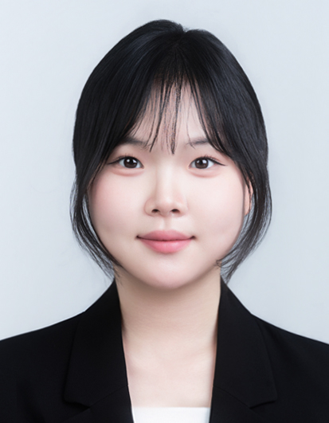

이혜현
데이터 분석 · 머신러닝 · LLM/음성 처리 · FastAPI 서비스 개발까지,
AI를 실제 서비스로 연결합니다.

주요 프로젝트
기업용 AI 모의면접 플랫폼
- 기간
- 2026.10 ~ 2026.11
- 역할
- 전 영역 참여 및 PRD, TRD, 화면정의서 문서 제작
- 핵심 기술
- FastAPI · Ollama · STT/TTS · OCR · React
목표 외부 API 없이 오픈소스 LLM(Ollama)으로 질문 생성·평가를 수행하고, 모든 음성·영상·이력서 데이터를 기업 내부망에서만 처리하는 면접 플랫폼.
머신러닝 End-to-End 분석 파이프라인
- 기간
- 2026.08 ~ 2026.09
- 인원 / 역할
- 5명 / 전 과제 참여 및 opinosis 보고서 제작
- 핵심 기술
- scikit-learn · LightGBM · Hyperopt · SHAP
활동 · 경험
- CRDT(Yjs) 바이너리 업데이트로 기존 JSON 방식 대비 데이터 전송량 절감
- 하이브리드 통신: 잦은 편집은 WebSocket(STOMP), 구조 변경은 REST로 분리해 저사양 서버(Raspberry Pi)에서도 정합성 확보
- 슬라이드 단위 선택적 복구: 문서 전체 복원의 한계를 넘는 독립 히스토리 관리
- 홈 영상·공지사항·예약 등 분산된 마이크로서비스 데이터를 하나의 흐름으로 보여주는 React 통합 키오스크 UI 개발
- 터치 환경을 고려한 UI 배치와, 홍보 영상에서 정보 탐색으로 이어지는 화면 전환 설계
- API Gateway 기반 MSA 환경에서 API 호출을 최적화해 대화면에서도 끊김 없는 반응성 확보
- 현지 팀과 영어로 요구사항을 정의하고 협업하여, 학생·교수자가 과목 정보를 관리하는 과목 관리 시스템 웹 서비스 구현
보유 기술
- AI / ML
- Python, scikit-learn, PyTorch, imbalanced-learn, Hyperopt, Optuna, SHAP
- LLM · 음성 · 문서
- Ollama(LLM), STT/TTS, OCR, Pydantic 스키마 검증, 근거(Grounding) 기반 질문 생성
- Backend
- FastAPI, Uvicorn, SQLAlchemy, PostgreSQL, Argon2 해싱, 세션 인증, REST API, WebSocket(STOMP), MSA·API Gateway 연동, Swagger(OpenAPI)
- Frontend
- React, TypeScript, JavaScript, HTML/CSS, Konva.js, Yjs(CRDT), Axios / Fetch API
- Infra · 협업
- Docker, GitHub Actions(CI/CD), Anaconda / Virtualenv, GitHub(브랜치 전략 기반 협업)
교육
- LangChain/LangGraph 기반 RAG 파이프라인 구축, Multi-Agent 시스템 설계 및 ReAct/Tool-Use 패턴 구현
- WebRTC, STT/TTS 스트리밍, 비동기(asyncio) 및 Celery/Redis 기반 초저지연 AI 인터랙션 구축
- FastAPI 백엔드 구축, Pydantic 데이터 검증, Docker/Kubernetes 기반 마이크로서비스 배포
학력
자기소개서
지원동기
모델의 정확도가 아무리 높아도 사용자가 쓰는 서비스에 안정적으로 녹아들지 못하면 가치가 되지 못한다고 생각합니다. 그래서 모델을 만드는 데서 멈추지 않고 서비스에 접목해 실제 문제를 해결하는 AI 응용 엔지니어를 목표로 삼았습니다.
이 목표를 위해 메가스터디 AI 캠퍼스에서 데이터 분석, 머신러닝·딥러닝, LLM과 음성 처리, FastAPI 기반 서비스 개발을 배웠습니다. 이어서 5인 팀으로 STT/TTS, OCR, 오픈소스 LLM(Ollama)을 하나의 흐름으로 연결한 AI 모의면접 플랫폼을 만들었고, 문제 유형이 서로 다른 4개 데이터셋으로 분류·군집·회귀 파이프라인을 설계해 모델링부터 튜닝, SHAP 해석까지 직접 수행했습니다. 여기에 프론트엔드와 실시간 시스템을 다룬 논문·키오스크 프로젝트 경험이 더해져, AI 기능이 실제 화면과 서버 위에서 어떻게 동작해야 하는지 함께 고민할 수 있게 되었습니다.
AI의 가능성과 서비스의 현실 사이를 연결하는 일을 이어가고 싶어 지원합니다.
기술 수행 경험 및 문제 해결 경험
AI 모의면접 플랫폼 (2026년 10월 ~ 11월)
지원자가 AI 면접관과 음성으로 면접을 보고, HR 담당자가 질문과 평가 기준을 설정해 지원자를 비교하는 서비스입니다. 모든 음성·영상·이력서 데이터를 기업 내부망에서만 처리해야 한다는 조건이 있어 외부 API 대신 Ollama 기반 LLM을 사용했고, 기능 전반에 참여했습니다.
가장 어려웠던 점은 LLM의 출력이 일정하지 않다는 것이었습니다. 지원자 답변과 무관한 질문이 나오거나 응답 형식이 깨지면 면접 흐름이 끊기기 때문입니다. 이를 프롬프트 수정만으로 풀지 않고, STT로 변환된 답변의 키워드를 근거로 질문을 생성하도록 제한하고, Pydantic JSON 스키마로 출력 형식을 강제했습니다. 또 답변이 모호하거나 이력서 내용과 어긋날 때만 꼬리질문을 하되 횟수를 제한해 면접이 길어지지 않도록 했습니다. 이 경험으로 LLM을 서비스에 쓰려면 프롬프트뿐 아니라 입력 근거, 출력 검증, 실패 처리까지 설계해야 한다는 점을 배웠습니다.
머신러닝 분석 프로젝트 (2026년 8월 ~ 9월)
은행 고객 불만족 예측, 신용카드 이상 거래 탐지, 리뷰 군집, 중고거래 가격 예측의 네 과제를 맡았습니다. 특히 사기 거래가 전체의 0.17%인 데이터에서는 Accuracy가 높아도 사기를 거의 잡지 못하는 문제가 있었습니다. 평가 기준을 PR-AUC와 F1 중심으로 바꾸고 SMOTE, ADASYN, 언더샘플링을 비교해 Recall을 개선했습니다. 문제의 구조에 맞는 지표와 전처리를 먼저 고르는 것이 모델 선택보다 중요하다는 것을 체감했습니다.
협업 경험
말레이시아 UCSI 글로벌 인턴십에서 현지 팀과 영어로 요구사항을 정리하며 과목 관리 시스템을 함께 만들었고, HCI 2026 학술대회에서는 실시간 협업 편집 시스템(CRDT)을 주제로 한 논문이 채택되어 포스터 발표를 했습니다. 여러 사람이 동시에 일하는 환경에서 충돌 없이 합의하는 방법을 기술과 소통 양쪽에서 고민한 경험입니다.
입사 후 포부
입사 후에는 서비스의 코드베이스와 운영 환경, 데이터 흐름을 빠르게 익히는 데 집중하겠습니다. 이후에는 LLM이나 모델 기반 기능 하나를 기획부터 배포까지 책임지고 구현하겠습니다. 이때 모의면접 플랫폼에서 얻은 입력 근거 제한, 출력 검증, 실패 처리 방식을 적용해 AI 기능이 예측 가능하게 동작하도록 만들겠습니다.
이후에는 모델 성능 평가와 모니터링 체계를 갖춰 서비스 품질 개선을 주도하는 엔지니어로 성장하겠습니다. 궁극적으로는 도메인을 이해하고 AI 기술과 서비스 개발을 모두 다룰 수 있는 AI 응용 엔지니어가 되어, 팀이 믿고 AI 기능을 맡길 수 있는 사람이 되겠습니다.
성격의 장단점
끝까지 구조를 파고드는 꼼꼼함이 장점입니다.
모의면접 플랫폼에서 LLM 출력이 흔들릴 때 증상만 고치지 않고 입력 근거, 출력 스키마, 꼬리질문 규칙으로 원인을 나눠 해결했습니다. ML 프로젝트에서도 팀원별 시도를 기록하고 통합 보고서로 정리해, 결과뿐 아니라 근거를 함께 남기는 습관을 길렀습니다.
소통을 통해 협업을 이끄는 점도 장점입니다.
10인 팀 키오스크 프로젝트와 영어로 진행한 해외 인턴십에서 서로 다른 서비스와 사람의 요구를 조율하며 한 화면과 한 흐름으로 맞췄습니다.
단점은 새로운 기술을 보면 구현 범위를 넓게 잡는 편이라는 것입니다.
이 때문에 우선순위 정리가 늦어진 적이 있어, 지금은 작업 전에 반드시 필요한 기능과 이후 확장 기능을 나누고 일정 단위로 범위를 점검합니다. 이후 프로젝트에서는 핵심 기능을 먼저 완성한 뒤 확장하는 방식으로 일정을 지킬 수 있었습니다.